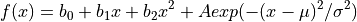
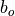
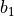
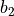
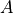

box¶
The LT box contains an assortment of plotting, histogramming and fitting routines used for data analysis. The plotting routines have been imported from the plotting module and the fitting routines have been imported from the The LT_Fit Package. For detailed information about these functions check the plotting and the the The LT_Fit Package documentation.
Normally all you should need to do is import the box and you have a box of tools.
Example:
>>> import LT.box as B
Imported functions:
- From LT.plotting:
plot_exp(): plot experimental data points with or without error bar
plot_line(): plot a line through a set of data points
plot_spline(): plot a spline curve through a set of data pointsdplot_exp: (
datafile_plot_exp()) is like plot_exp but accesses the datafile variables directly via their namesdplot_line: (
datafile_plot_theory()) like plot_line for datafile variablesdplot_spline: (
datafile_spline_plot_theory()) like plot_spline for datafiles variables- From LT_Fit:
linefit: fit a straight line through a set of data points
polyfit: fit a polynomial
gen_linfit: general linear fit
genfit: general, non-linear fit
Box Content:
-
LT.box.get_file(file, **kwargs)¶ Assume that B is the name of LT.box.
Open and read the file:
>>> md = B.get_file( 'file.data' )
-
LT.box.get_data(D, var)¶ Assume that B is the name of LT.box.
Get all the values of variable ‘my_var’ as a
numpy.array():>>> mv = B.get_data(md, 'my_var')
-
LT.box.get_spectrum(file, calibration=None)¶ Read an MCA spectrum and convert it to a histogram.
Example:
>>> h = B.get_spectrum('co60.spe') # read the spectrum >>> h.plot() # plot the spectrum
-
class
LT.box.histo(values=None, range=None, bins=None, histogram=None, bin_error=None, bin_center=None, bin_content=None, file=None, window=None, title='my histogram', xlabel='x-bin', ylabel='content', **kwargs)¶ Define a histogram based on the np.histogram class.
The various ways of defining one are:
If a is a 1D (
numpy.array()) containing the data to be histogrammed>>> h = histo( a )
If his is the output of the
numpy.histogram()function>>> h = histo(histogram = his)
If
bcis a 1D array with bin center values, andbcontcontains bin content values then:>>> h = histo(bin_center = bc, bin_content = bcont)
A filename for a stored histogram is given
>>> h = histo(filename), where filename contains the pdatafile
Usually the result of a histo.save operation
Important keywords:
Keyword
Meaning
values
Array of values to be histogrammed (
numpy.array())range
Lower and upper limits of binning ( e.g.
range = (10.,20.))bins
Number of bins
histogram
Result of
numpy.histogram()functionbin_error
Array of errors for each bin content (
numpy.array())bin_center
Array of bin-center values (
numpy.array())bin_content
Array of bin-content values (
numpy.array())file
Load data from file
window
Set a window (a zoom window)
title
Set the title
xlabel
Set the x-label
ylabel
Set the y-label
Additional keyword arguments are passed to the
numpy.histogram()function-
apply_calibration(cal)¶ apply x-axis calibration, new axis values are cal(xaxis)
-
clear()¶ Set the content and errors to 0.
-
clear_window()¶ Reset (Clear) the defined window
-
copy()¶ Create a copy of the histogram:
>>>hc = h.copy()Only the histogram values are copied, no lables and titles etc.
-
fill(y, add=False, **kwargs)¶ Fill the histogram with the values stored in the
numpy.array()y.Keyword
Meaning
add
if True add the results to the existing content
Additional keyword arguments are passed to the
numpy.histogram()function
-
find_bin(x)¶ Find the bin that would contain the value x
-
fit(xmin=None, xmax=None, init=True, ignore_zeros=True, **kwargs)¶ Fit a gaussian on a quadratic background. You can also just fit a background or just a gaussian. All this is controlled by which parameters you want to fit. Another important part of non-linear fitting is that you need to provide reasonable guesses for the fit parameters. The parameters in
histoare not just numbers but objects with their own properties and functions (seeParameter). The full fit function is as follows:
The (
LT.box.histo) parameters are:Parameter
Histo Class Member

b0

b1

b2

A

mean

sigma
Which parameters are fitted is defined in
set_fit_list()Keyword arguments are:
Keyword
Meaning
xmin
lower fit limit
xmax
upper fit limit
init
True/False (default = True) estimate initial fit parameters automatically
ignore_zeros
True/False (default = True) ignore channels with bin content zero
kwargs
additional keywords are passed to gen_fit (use only if you know what you are doing!)
-
fit_func(x)¶ The function fitted to the histogram data
-
fit_view(init=True)¶ Fit histogram using the current display limits as fit range. This is only useful if the histogram has been plotted.
-
init_gauss(xmin=None, xmax=None)¶ Calculate the initial parameter guess for a gaussian. These parameters can them be used in the call to
fit
-
init_parameters()¶ Reset fit parameters to their default values
- Returns
- None.
-
load(file='histo.data')¶ read the histogram data from
pdatafileIf the file does not result from a save function make sure that all the necessary data are present.
-
plot(filled='True', ymin=0.0, axes=None, ignore_zeros=False, **kwargs)¶ Plot the histogram content:
Keyword
Meaning
filled
if True draw a filled histogram
ymin
lower limit where fill starts (horizontal line)
ignore_zeros
do not plot channels with bin content 0 (default = False)
-
plot_exp(ignore_zeros=False, **kwargs)¶ Plot histogram content and errors like experimental data.
Keyword
Meaning
ignore_zeros
do not plot channels with bin content 0 (default = False)
-
plot_fit(color='r', axes=None, **kwargs)¶ Plot the fitted curve
Keyword
Meaning
color
color of the fitted line
-
rebin(n, scale=False, use_mean=False, replace=False)¶ rebin the histogram by a factor n:
>>>hc = h.rebin(2)Keyword
Meaning
scale
- True: the original bin number is not a multiple of n
and the last bin content will be scaled
use_mean
True: the new bin content is the mean of the bin_content
replace
- True: replace the current histogram with the
rebinned version
-
set_fit_list(fit=['A', 'mean', 'sigma'])¶ Define which parameters are to be fitted.
The default list is
fit = [ 'A', 'mean', 'sigma']
to use all parameters:
h.set_fit_list( fit = [ 'A', 'mean', 'sigma', 'b0', 'b1', 'b2'])
-
set_window(xmin=None, xmax=None)¶ Define a window into the histogram. This is similar to a zoom or a region of interest (ROI)
Keyword
Meaning
xmin
lower limit for plotting or fitting
xmax
upper limit
-
set_window_view()¶ Like set_windows but uses the current display limits. This is only useful if the histogram has been plotted.
-
show_fit_list()¶ Show the current fit list
- Returns
- None.
-
sum(xmin=None, xmax=None)¶ Return the sum of all bins. If the limits are given, calculate the sum of all bins between the bins that contain the values xmin and xmax.
Example:
>>> s0 = h.sum() # add all bins >>> s1 = h.sum(0.5, 1.1) # add the bins between 0.5 and 1.1 >>> s2 = h.sum(xmin = 0.5, xmax = 1.1) # add the bins between 0.5 and 1.1
Keyword
Meaning
xmin
lower limit of sum of bin content
xmax
upper limit of sum
The errors are also calculated.
-
class
LT.box.histo2d(x_values=None, y_values=None, range=None, bins=None, histogram=None, bin_error=None, bin_content=None, x_bin_center=None, y_bin_center=None, file=None, title='my histogram', xlabel='x-bin', ylabel='y-bin', zlabel='content', bad_color='w', colorbar=True, logz=False, **kwargs)¶ Define a 2d histogram based on the np.histogram2d class.
The various ways of defining one are:
If xv is a 1D (
numpy.array()) containing the x-value data to be histogrammed and yx is a 1D array containing the y-value data :>>> h2 = histo2d( xv, yv )
If his2 is the output of the
numpy.histogram2d()function>>> h2 = histo2d(histogram = his2)
If
xbcis an array with x-bin center values,ybcis an array with y-bin center values andbcontcontains bin content values then use:>>> h2 = histo2d(x_bin_center = xbc, y_bin_center = ybc, bin_content = bcont)
A filename for a stored histogram is given
>>> h2 = histo2d(filename), where filename contains the pdatafile
Usually the result of a histo2d.save operation
Important keywords:
Keyword
Meaning
xvalues
Array of x-values to be histogrammed (1d-
numpy.array())yvalues
Array of y-values to be histogrammed (1d-
numpy.array())range
Lower and upper limits of binning ( e.g.
range = (10.,20.))bins
Number of bins, or [binsx, binsy]
histogram
Result of
numpy.histogram2d()functionx_bin_center
1d-Array of x - bin-center values (
numpy.array())y_bin_center
1d-Array of y - bin-center values (
numpy.array())bin_content
2d-Array of bin-content values (
numpy.array())bin_error
2d-Array of errors for each bin content (
numpy.array())file
Load data from file
title
Set the title
xlabel
Set the x-label
ylabel
Set the y-label
zlabel
Set the z-label
colorbar
if True, plot a colorbar
bad_color
Set the color for plot for bins below zmin (default: w)
logz
if True plot content on log scale
Additional keyword arguments are passed to the
numpy.histogram2d()function-
apply_calibration(cal_x, cal_y)¶ apply x and y-axis calibration, new axis values are cal(xaxis) cal(yaxis)
Keyword
Meaning
cal_x
x-axis calibration function
cal_y
y-axis calibration function
- Returns
- None., calculates new bin vakues
-
clear()¶ Set the content and errors to 0.
-
draw_polygon(p, **kwargs)¶ draw a polygon used as cut
Keyword
Meaning
p
array of coordinate pairs determining the corners of the polygon
- Returns
- None.
-
fill(x, y, add=False, **kwargs)¶ Fill the histogram with the values stored in the
numpy.array()y.Keyword
Meaning
add
if True add the results to the existing content
Additional keyword arguments are passed to the
numpy.histogram()function
-
find_bin(x, y)¶ Find the bin value pair for that would contain the value pair x, y
-
plot(axes=None, graph='patch', clevel=10, colormap=<matplotlib.colors.LinearSegmentedColormap object>, logz=False, **kwargs)¶ Plot the 2d histogram content:
Keyword
Meaning
graph
type of plot: patch, contour, surface, lego
clevel
number of contour levels (default 10)
colormap
colormap to be used (default CMRmap)
logz
if True use a logarithmic scale for content (patch and contour only)
kwargs
additional kwargs are possed to the plotting routines
-
poly_cut(p)¶ Setup a polygon cut :
Keyword
Meaning
p
array of coordinate pairs determining the corners of the polygon
- example for a triangle cut
p = np.array( [[1,2], [2,4], [0.5,3] ])
- Returns
- Masked array to be applied to the bin_content and bin_error
-
project_x(range=None, bins=None)¶ project a range of y-bins onto the x-axis
Keyword
Meaning
range
the range in y included in the projection
bins
an array of bins or a slice selecting the y-bins to be included in the projection
both None
Project all the y-bins
- Returns
- 1d - histogram
-
project_y(range=None, bins=None)¶ project a range of x-bins onto the y-axis
Keyword
Meaning
range
the range in x included in the projection
bins
an array of bins or a slice selecting the x-bins to be included in the projection
both None
Project all the x-bins
- Returns
- 1d - histogram
-
rect_cut(x1, x2, y1, y2)¶ Setup a rectangle cut
Keyword
Meaning
x1
lower x limit
x2
upper x limit
y1
lower y limit
y2
upper y limit
- Returns
- selmasked array for the bin_content
-
save(filename='histo2d.data', ignore_zeros=True)¶ Save the histogram in
pdatafileformatKeyword
Meaning
filename:
filename to be used
ignore_zeros
if True, write only bins with non-zero content (default True)
-
set_nans(value=0.0, err_value=1.0)¶ replace nans by specified values
Keyword
Meaning
value
replaces the nan in bin_content (default 0)
err_value
replaces the corresponding bin_error (default 1)
- Returns
- None.
-
sum(rect_cut=None, poly_cut=None, draw=False)¶ Return the sum of all bins. If the limits are of a rectangle are given, calculate the sum of all bins inside it or inside a polygon poly
Example:
>>> s0 = h.sum() # add all bins >>> s1 = h.sum(rect = [x1,x2, y1, y2]) >>> s2 = h.sum(poly = ([x1, x2, ...], [y1, y2, ...])) # add the bins inside the polygon
Keyword
Meaning
xmin
lower limit of sum of bin content
xmax
upper limit of sum
The errors are also calculated.
Histogram Operations¶
The following operations are defined for Histograms (1-D and 2-D)
(histo ):
In [1]: hr = h1 + h2 # addition
In [2]: hr = h1 - h2 # subtraction
In [3]: hr = 2.*h1 # mutiplication by a number
In [4]: hr = 5.5*h1 - 2.*h2 # combination of the above
- Note: When adding histograms they need to be of the same type (the
same number of bins, same bin-center values). Labels and titles are not copied.